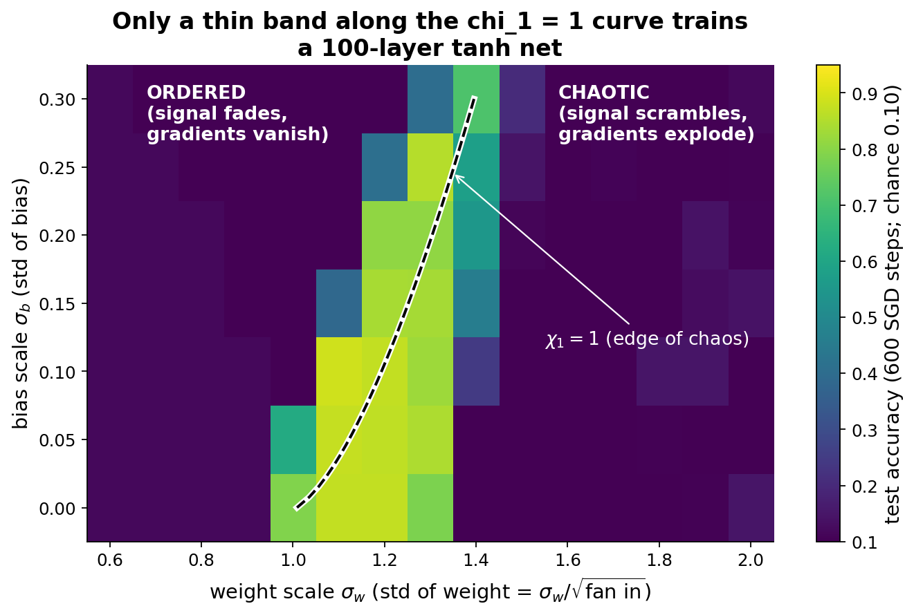
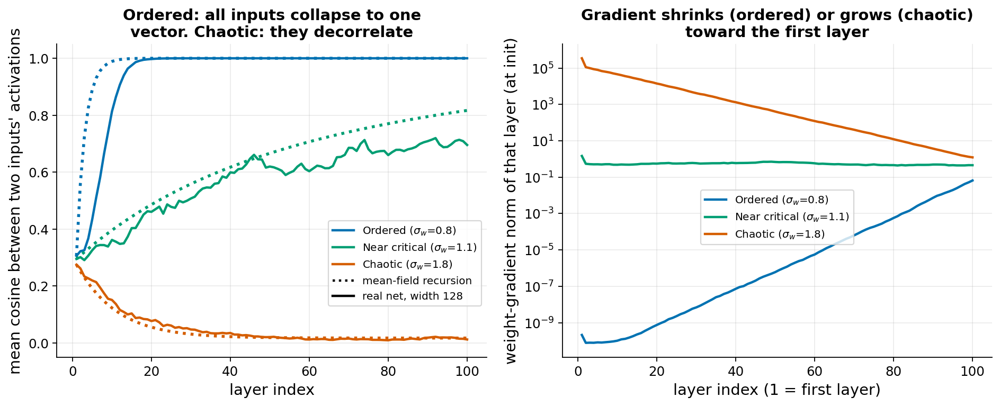
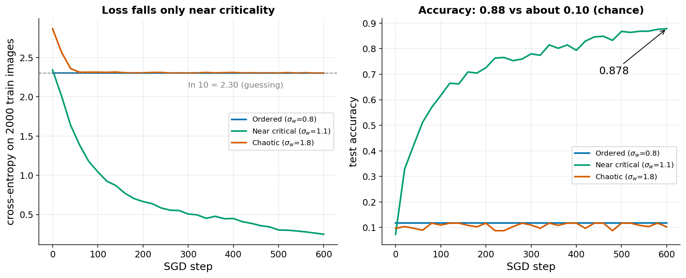
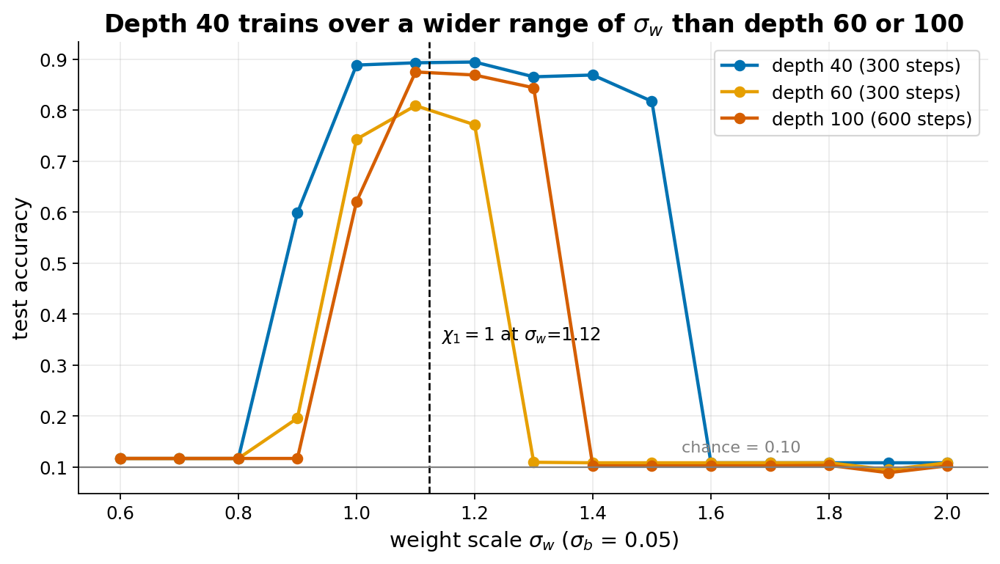

Init phase diagram
Extends Going deep (Lab 1).
The idea
A deep network starts from random weights. Each layer multiplies its input by a random matrix and applies a nonlinearity. After 100 layers, the starting scale of those matrices decides what is left of the input signal and of the gradient.
We draw each weight from a normal distribution with standard deviation sigma_w / sqrt(fan_in) (fan_in = number of inputs of the layer) and each bias with standard deviation sigma_b. Two knobs: sigma_w and sigma_b.
- Ordered phase (small sigma_w). Each layer shrinks the differences between inputs. After enough layers, two different images give almost the same activations (cosine similarity close to 1). The gradient reaching early layers is tiny. The network cannot learn.
- Chaotic phase (large sigma_w). Each layer amplifies small differences. Two similar images end up unrelated (cosine close to 0). The gradient reaching early layers is huge and carries little useful information. The network cannot learn either.
- Edge of chaos. The boundary between the two. Differences between inputs neither die out nor blow up as they travel through the layers.
What chi_1 means. Take two almost identical inputs. Let chi_1 be the factor by which one layer multiplies the squared distance between them, on average, for wide layers (the same factor multiplies the squared gradient norm on the way back). If chi_1 is below 1, distances shrink layer after layer (ordered). If it is above 1, they grow (chaotic). The edge of chaos is chi_1 = 1. For tanh, chi_1 is computed from sigma_w and sigma_b with a one-dimensional integral and a short fixed-point iteration (the prototype does this in about ten lines). The curve chi_1 = 1 is the dashed line in the plots below.
Link to Xavier and He initialization. Those rules set the weight variance so that activation variance (He: for ReLU) or both forward and backward variance (Xavier: for tanh) stays about constant from layer to layer. Here the same idea is extended to the whole distribution of inputs: it also asks that differences between inputs are preserved. For tanh with no bias, chi_1 = 1 gives sigma_w = 1.0, which is the Xavier-style scale. With biases the critical sigma_w is larger (1.12 at sigma_b = 0.05 and 1.40 at sigma_b = 0.3, computed by the prototype code).
Established. The mean-field calculation and the order/chaos boundary for wide tanh networks come from Poole et al. (2016) and Schoenholz et al. (2017). Schoenholz et al. also showed that trainable networks lie near the boundary, and that the usable depth grows with how close you are to it. Xiao et al. (2018) carried the idea to convolutional networks and to networks with thousands of layers. Debated or limited. The theory assumes infinite width and random weights at initialization only. It says nothing about how training moves the weights, and with modern tools (batch normalization, residual connections, Adam) the sensitivity to initialization is much weaker. Many practitioners treat the edge of chaos as a useful diagnostic and not as a rule for production networks.
Course link. Goodfellow ch. 8.4 (parameter initialization) gives heuristics for the starting scale and says the theory of initialization is poorly understood. This theme gives a quantitative picture of why it matters for depth (ch. 6, deep feedforward networks), and of vanishing and exploding gradients (ch. 8.2.4 on cliffs and exploding gradients, and ch. 10.7 for recurrent networks).
- Poole, Lahiri, Raghu, Sohl-Dickstein, Ganguli (2016), Exponential expressivity in deep neural networks through transient chaos.
- Schoenholz, Gilmer, Ganguli, Sohl-Dickstein (2017), Deep Information Propagation.
- Xiao, Bahri, Sohl-Dickstein, Schoenholz, Pennington (2018), Dynamical Isometry and a Mean Field Theory of CNNs.
What students would do
- Build the network. A 100-layer tanh MLP, width 128, on MNIST. A helper function sets the weights with std
sigma_w / sqrt(fan_in)and the biases with stdsigma_b. - Forward pass only (no training, about 0.01 s). Feed 64 images, plot the cosine similarity between two different images at each layer, for a small sigma_w (0.8), a middle one (1.1), and a large one (1.8). Students see the three behaviours of the signal-propagation figure below.
- One backward pass. Plot the gradient norm per layer. Students see vanishing and exploding gradients directly.
- Compute chi_1 from the supplied function and see where it crosses 1. Predict, before training, which cells should work.
- Train. Fixed recipe: SGD, momentum 0.9, learning rate 0.001, 600 steps, batch 128. The learning rate is fixed on purpose: with 0.01 the runs fail (see the findings below).
- Class experiment. The grid has 15 values of sigma_w (0.6 to 2.0, step 0.1) times 7 values of sigma_b (0, 0.05, ..., 0.3) = 105 cells. Each student trains a few cells and reports (sigma_w, sigma_b, test accuracy).
- Class plot. A heatmap of test accuracy over (sigma_w, sigma_b), filled as results arrive, with the theoretical chi_1 = 1 curve drawn on top (it can be hidden until the end, as a prediction game).
Questions for the discussion.
- Why does the trainable region follow a curve, and why does it move right when sigma_b grows?
- Why does the loss stay at ln 10 = 2.30 on both sides, even though the two failures are opposite (vanishing and exploding gradients)?
- Which of these failures could a learning-rate change fix? (Hint: the prototype says lr 0.01 fails too.)
- Why does the trainable window shrink with depth? What does it say about why Xavier or He init is enough for 10 layers but not for 100?
- What do batch normalization and residual connections change?
What our prototype found
Setup: depth 100, width 128, tanh, SGD with momentum 0.9, lr 0.001, 600 steps, batch 128, 12,000 training and 2,000 test MNIST images, seed 0 for every cell (one run per cell in the saved grid).

exploration/res_d100.npy, replotted.


exploration/.| Quantity | Value |
|---|---|
| Best cell (depth 100) | test accuracy 0.887 at sigma_w = 1.1, sigma_b = 0.1 |
| Critical sigma_w at sigma_b = 0 / 0.05 / 0.1 / 0.2 / 0.3 | 1.009 / 1.123 / 1.193 / 1.304 / 1.396 |
| chi_1 at sigma_b = 0.05 for sigma_w = 0.8 / 1.1 / 1.8 | 0.63 / 0.99 / 1.27 |
| Cells with accuracy at least 0.5 / 0.8 (of 105) | 19 / 13 |
| Near-critical cell (1.1, 0.05): loss, accuracy at step 600 | 0.25, 0.878 |
| ReLU contrast (depth 60, sigma_b = 0) | best accuracy 0.31 (not tuned, failed) |
Other prototype findings, not re-checked
Three seeds are reproducible at sigma_b = 0 and sigma_b = 0.15 but noisy at sigma_b = 0.3 (peak accuracy 0.75, 0.39, 0.68). At depth 60, sigma_b = 0.05, the three seeds give different windows of sigma_w (accuracy above 0.7: seed 0 at 1.0 to 1.2, seed 1 never, seed 2 at 1.1 to 1.2); this is in seeds.log.